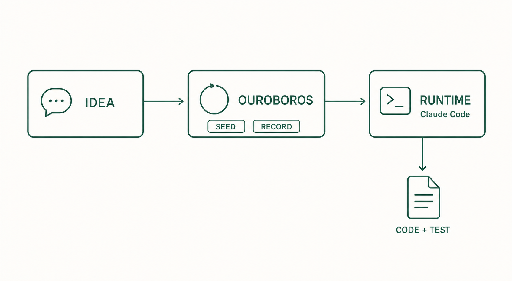

1. What is Ouroboros
Ouroboros is an open-source tool that manages the requirements, execution, evaluation, and records of AI coding work.
1.1 Definition
Ouroboros does not write code itself. Code is written by an AI coding tool such as Claude Code or Codex. Ouroboros works before and after that tool: it pins down requirements, hands off execution, verifies results, and records the process.

1.2 What you put in
You describe the feature you want or the problem you want fixed, in plain sentences. You do not need a polished specification. Missing decisions are collected by Ouroboros through questions.
| Input | Example |
|---|---|
| A one-line idea | "A web app that adds to-dos and marks them done" |
| Answers to questions | "The list should survive a page refresh" |
| An existing repository (optional) | A project folder you already have |
1.3 Division of roles
Ouroboros and the AI coding tool do different jobs. Ouroboros is the management layer; the AI coding tool is the execution layer. Ouroboros calls the execution layer the runtime.
| Actor | Responsibility |
|---|---|
| You | Provide the idea, answer questions, approve the Seed, check the result |
| Ouroboros | Ask questions (Interview), write the work spec (Seed), manage execution, evaluate, record |
| Runtime (Claude Code, etc.) | Write files, edit code, run commands, run tests |
The Seed is the work-spec document that connects the two layers. Goal, constraints, and completion criteria are saved as a YAML file, and the runtime works against that file. The Seed is covered in chapter 6.
1.4 What remains after a run
More than code remains. The following five things are kept.
| Artifact | Content | Location |
|---|---|---|
| Code | Files and tests written by the runtime | Your working folder |
| Seed | The work spec used for this run | ~/.ouroboros/seeds/ |
| Test results | Whether lint, build, and tests passed | Evaluation output |
| Evaluation results | Verdict on the completion criteria | Evaluation output |
| Execution records | Every execution event | ~/.ouroboros/ouroboros.db |
Because execution records persist, you can find interrupted work again and check later what was run and why.
1.5 Before and after
With an AI coding tool alone, the request, the code, and the verification all flow by inside a chat. With Ouroboros, requirements live in a Seed file, the process lives in records, and completion lives in an evaluation verdict. Why this difference matters is explained in chapter 2.